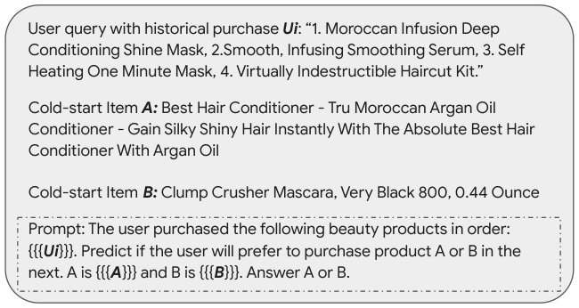
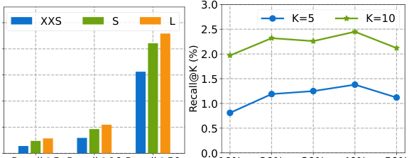

Large Language Models as Data Augmenters for Cold-Start Item Recommendation (大语言模型作为冷启动物品推荐的数据增强器)
- 会议/期刊: WWW 2024 (Short Paper, 4 pages)
- 作者与机构: Jianling Wang, Haokai Lu, James Caverlee, Ed Chi, Minmin Chen (Google DeepMind；Texas A&M University)
- 推荐链路定位: 召回（训练期增强，不改变线上服务链路）
- 研究方向: 冷启动与长尾推荐 / 大语言模型推荐 (LLM4Rec)
- 论文原文: https://arxiv.org/abs/2402.11724v1
- 开源代码: 暂未开源
TL;DR (1分钟核心速览)
本文针对 "冷启动物品没有任何交互因而 ID embedding 完全未被训练" 这一痛点，不在服务期调用 LLM，而是把 LLM 当作训练期的数据增强器：用成对比较提示（pairwise prompt）让 PaLM2 依据用户历史购买标题推断其对两个冷启动物品的偏好，再将合成偏好以辅助 BPR 成对损失注入 NeuMF/SASRec。在 Amazon Beauty/Sports 上采用全局时间戳 7:3 切分（仅出现在测试期的物品定义为 cold）与全库 Recall@K 评测，NeuMF 冷启动 R@50 从 0.48% 提升到 10.53%（约 21.9 倍），SASRec 从 0.74% 提升至 11.40%，而 warm-start 指标仅有 ≤0.4% 的边际波动。
Background & Motivation (背景与核心矛盾)
- 主流范式: 工业推荐依赖 ID-based 隐因子模型 \(\hat{y}_{u,i}=\mathbf{v}_u^{\top}\mathbf{v}_i\)（NeuMF、SASRec 等），以及用 BOW/类别等 side information 做 content-based 泛化。
- 前人局限: ① 纯 ID 模型对新上架、零反馈物品无任何梯度，冷启动物品 embedding 近乎随机初始化；② content-based 方案虽能给出非零分，但丢弃协同信号，在 warm-start 上显著掉点（Beauty R@50 18.76%→16.89%）；③ 直接部署 LLM 做生成式检索需微调大型模态编码器且单请求延迟远超工业要求的 O(100ms)，QPS 不可承受。
- 核心洞察 (Key Insight): LLM 的 world knowledge 足以"推理"用户是否会喜欢某个新物品；且 LLM 在做成对比较时比做点式相关性打分更可靠（后者标定性差），成对提问还能保证每次调用都产出有效偏好标签（点式提问大概率得到"不感兴趣"）。
- 本文切入点: 把 LLM 的输出放在离线训练阶段当作合成交互，用模型无关的辅助损失消费，从而同时规避服务延迟与冷启动数据缺口。
Method (核心方法设计)
1. 整体框架 (Overall Architecture)
对训练集中每条用户查询 \(U_i\)（用户历史物品的标题序列），随机采样两个冷启动物品\(A,B\in\mathcal{I}_{cold}\)构造成对比较提示，问 LLM "该用户下一次更可能买 A 还是 B，只回答 A 或 B"；LLM 返回的胜者记为\(pos\)、败者记为\(neg\)，构成一条合成偏好三元组\((u,pos,neg)\)。该三元组与原始交互数据混合成一个 batch，除主任务的 sampled batch softmax 损失外，再叠加辅助 BPR 损失，梯度直接回传到两个冷启动物品的 ID embedding 上完成"预热"。推理阶段完全回到原推荐模型，无任何 LLM 调用开销。
flowchart TD
A["用户历史标题序列 U_i + 冷启动物品对 (A,B)"] --> B["成对比较 Prompt → PaLM2（免微调）"]
B --> C["合成偏好标签 (u, pos, neg)"]
C --> D["辅助 BPR 损失 L_aug"]
A --> E["原始交互数据 → 主任务 sampled softmax"]
D --> F["冷启动物品 ID Embedding 更新"]
E --> F
F --> G["线上：原模型全库打分召回"]2. 关键设计拆解 (Key Designs)
- 成对比较提示构造（Pairwise Comparison Prompting）：痛点是点式提问下正例极稀疏且 LLM 打分未标定；改法是强制二选一，使每次调用必产出一个正例与一个负例，等价于对冷启动物品池做了一次"免费"的成对偏好标注。提示中历史交互只用描述性标题（而非 ID），从而把 CF 信号转成 LLM 可读的语义上下文。

- 辅助成对排序损失（Auxiliary Pairwise Loss）：痛点在于冷启动物品在 sampled softmax 中几乎不会作为正例出现，梯度为零；本文加入
其物理直觉是：该损失只约束 \(pos\)与\(neg\) 的相对序，不要求绝对分数标定，因而对 LLM 可能存在的噪声与偏置更鲁棒；同时一条合成样本同时更新两个冷启动物品的 embedding，样本利用率为点式做法的两倍。
- 训练目标、负采样与推理效率：总损失 \(\mathcal{L}=\mathcal{L}_{softmax}+\lambda\mathcal{L}_{aug}\)；负例来自 batch 内负采样（主任务）与 LLM 判负的冷启动物品（辅助任务），无需额外硬负采样挖掘。增强比例上仅随机抽取 20% 用户查询、每查询生成 1 条样本（PaLM2-S）。推理零额外开销——这是相对 LLM-as-recommender 路线最本质的工程优势。
Experimental Setup & Evaluation Protocol (实验设置与评估协议)
- 数据集与预处理: Amazon Review 的 Beauty 与 Sports and Outdoors 两个类目；物品文本用标题+类别构造。
| 数据集 | #Warm Items | #Cold Items | #User Queries | 切分 | 场景说明 |
|---|---|---|---|---|---|
| Amazon-Beauty | n.r.（原文未报告） | n.r. | n.r. | 全局时间戳 7:3 | 美妆评论 |
| Amazon-Sports | 55,255 | 2,751 | 224,956 | 全局时间戳 7:3 | 户外运动评论 |
- 数据划分与防穿越:
全局时间戳切分 (single-time-point split)——以时间点按 7:3 切分训练/测试；仅出现在测试期的物品定义为 cold-start，其余为 warm-start，最贴近真实上架场景（严格 zero-shot，无任何交互）。 - 排名评测协议: 无偏
Full-Ranking——对每个测试查询在 \(\mathcal{I}=\mathcal{I}_{cold}\cup\mathcal{I}_{warm}\) 全库上打分取 Top-K；按 ground-truth 物品是否属于冷启动分组汇报 Recall@5/10/50。训练负采样为主任务 batch 内 softmax 负采样。 - 对比基线与超参: 骨干 NeuMF（ID 双塔）与 SASRec（自注意力序列）；三档变体 = Baseline(w/o aug)、content-based (BOW 物品表征)、LLM-augmentation(w/ aug)。LLM 侧用 PaLM2 XXS/S/L 免微调；主实验固定 PaLM2-S + 20% 增强比例。
Key Experimental Results (实验关键数据)
1. 主实验对比 (Main Results)
| 任务 | Cold-start (Beauty) | Cold-start (Sports) | Warm-start (Beauty) | Warm-start (Sports) | ||||||||
|---|---|---|---|---|---|---|---|---|---|---|---|---|
| 模型/指标 | R@5 | R@10 | R@50 | R@5 | R@10 | R@50 | R@5 | R@10 | R@50 | R@5 | R@10 | R@50 |
| NeuMF w/o aug | 0.14 | 0.22 | 0.48 | 0.01 | 0.02 | 0.13 | 3.44 | 5.36 | 18.76 | 2.65 | 4.76 | 17.98 |
| NeuMF content-based | 0.45 | 1.07 | 2.13 | 0.09 | 0.19 | 0.87 | 2.48 | 4.02 | 16.89 | 1.77 | 3.23 | 16.01 |
| NeuMF w/ aug | 1.19 | 2.32 | 10.53 | 0.22 | 0.41 | 2.11 | 3.35 | 5.21 | 18.03 | 2.32 | 4.75 | 17.67 |
| SASRec w/o aug | 0.18 | 0.48 | 0.74 | 0.10 | 0.22 | 0.31 | 4.25 | 6.18 | 19.87 | 3.57 | 5.48 | 19.01 |
| SASRec content-based | 0.56 | 1.26 | 4.77 | 0.15 | 0.30 | 0.96 | 2.90 | 5.01 | 16.97 | 1.89 | 3.09 | 16.33 |
| SASRec w/ aug | 1.34 | 2.47 | 11.40 | 0.37 | 0.61 | 2.41 | 4.30 | 6.11 | 19.79 | 3.51 | 5.39 | 18.95 |
| Improv. (vs w/o aug, 冷启 R@50) | +750% | +955% | +2094% | +2100% | +1950% | +1523% | — | — | −3.9% | — | — | −1.7% |
| Improv. (vs w/o aug, 冷启 R@50, SASRec) | +644% | +415% | +1440% | +270% | +177% | +677% | — | — | −0.4% | — | — | −0.3% |
2. 消融实验 (Ablation Study)
| 配置 (Beauty, NeuMF) | Cold R@5 | Cold R@50 | Warm R@50 | 说明 |
|---|---|---|---|---|
| Baseline (w/o aug) | 0.14 | 0.48 | 18.76 | 无冷启动物品训练信号 |
| 仅 content-based（替换物品表征） | 0.45 | 2.13 | 16.89 | 用 side info 但丢协同信号 |
| + 成对提示 + BPR 增强 (PaLM2-S, 20%) | 1.19 | 10.53 | 18.03 | 完整方案 |
| PaLM2 规模 / 增强比例（图2 趋势，NeuMF, Beauty） | 冷启 Recall 变化 |
|---|---|
| XXS → S → L | 单调上升，L 最强（LLM 推理能力随规模涌现） |
| 10% → 20% → 30% → 40% → 50% 增强比例 | 持续上升，约 40% 后饱和、无进一步收益 |
3. 关键实验发现 (Key Findings)
- 增强信号显著优于纯内容特征：Beauty 冷启 R@50 上，content-based 仅 2.13%，而 LLM 增强达 10.53%（约为其 4.9 倍，约为无增强基线的 21.9 倍），说明 LLM 提供的是"协同式"偏好而非仅语义相似度。
- 增益随 K 增大而放大：NeuMF Beauty 冷启 R@5 提升 8.5 倍、R@50 提升 21.9 倍，表明增强主要让模型把更多弱相关但合理的冷启动物品排进候选长尾，而非精修 Top-1，正好契合召回阶段的需求。
- 几乎无损 warm-start，且避免了 content-based 的严重掉点：SASRec Beauty warm R@5 反而从 4.25% 升到 4.30%，R@50 仅降 0.4%；对照 content-based 的 warm R@50 暴跌 14.6%（19.87%→16.97%），说明辅助损失与主任务解耦良好，不存在"用协同换冷启"的硬权衡。

Highlights & Limitations (亮点、对比与审稿批判)
- 与代表作对比 (vs. Prior Work): 相比 P5/TIGER 类 LLM-as-recommender 直接生成式检索，本文把 LLM 完全移出服务链路，延迟为零；相比 content-based 冷启动（BOW/元特征映射），本文不替换物品表征而是补足训练信号，因而保住 warm-start；相比 CLS4Rec 等"改序列视图"的数据增广，本文首次用 LLM 生成跨物品、语义级的合成偏好。
- 可迁移亮点: ① "成对提示 + BPR" 是低成本的 LLM 知识蒸馏接口，可迁移到新用户冷启动、跨域迁移与长尾扶持；② 用 LLM 判负作为免费硬负样本，替代人工负采样挖掘。
- 审稿级局限批判: ① 冷启动物品仅依赖标题文本，缺失图像/属性/价格等多模态信息，对标题信息量低的长尾类目可能失效；② 全文未验证 LLM 合成偏好的准确率（无人工校验或与真实交互的一致性指标），且仅两个 ID-based 骨干、无 prompt 变体消融，PaLM2 闭源亦削弱可复现性；③ 冷启动定义仅为"测试期新出现"，未覆盖上线后持续零曝光的 Stricter Zero-shot 场景。
Rating (四维评分)
- 方法创新性 (Novelty): ⭐⭐⭐⭐ （"LLM 只做训练期增强器"的定位与成对提示设计思路干净，但 BPR 辅助损失本身是成熟组件，属组合式创新）
- 评估协议与实验扎实度 (Protocol & Experiments): ⭐⭐⭐ （全局时间戳切分 + 全库排序 Recall 协议规范，但仅两数据集、无显著性检验、无 LLM 偏好准确率校验）
- 写作与数学规范度 (Clarity & Rigor): ⭐⭐⭐⭐ （4 页短文逻辑闭环、公式与符号极简清晰，代价是缺少复杂度与噪声分析）
- 工业落地与复现价值 (Industrial & Practical Value): ⭐⭐⭐⭐ （零服务期开销、模型无关、可直接插入现有训练管线，落地价值高；扣分在于未开源且依赖闭源 PaLM2）